In this tutorial we re-visit the solution of solid mechanics problems in which the deformation of the domain boundary is prescribed and enforced by Lagrange multipliers. This functionality is required, e.g., when using (pseudo-)solid mechanics to update the shape of the fluid mesh in large-displacement fluid-structure interaction problems.
Here we focus on the efficient solution of the governing equations by GMRES, using the problem-specific block-preconditioner developed in
Theory: Problem formulation, the resulting linear system and the preconditioner
We refer to another tutorial for a detailed description of the problem setup and its discretisation. Briefly, we consider the deformation of an elastic solid body whose shape is parametrised by Lagrangian coordinates 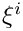. A part of the body's boundary,  , (which is parametrised by the boundary coordinate
, (which is parametrised by the boundary coordinate  ) is displaced to a new position given by
) is displaced to a new position given by  while the other boundaries are held in a fixed position (as in the sketch below) or are subject to traction boundary conditions.
while the other boundaries are held in a fixed position (as in the sketch below) or are subject to traction boundary conditions.

We discretise the problem using SolidElements in the bulk of the domain and employ lower-dimensional FaceElements to impose the displacement constraint along . The problem therefore contains the following types of discrete unknowns:
- The nodal positions (which are stored as positional
Dataat eachSolidNode).
- The nodal values representing the components of the (vector-valued) Lagrange multipliers. These only exist for the nodes on . (The nodes are re-sized to accommodate the additional unknowns when the
FaceElementsare attached to the bulk elements.)
The preconditioner requires a further sub-division of these degrees of freedom into the following categories:
- the x-coordinates of the unconstrained nodes
- the y-coordinates of the unconstrained nodes
- [the z-coordinates of the unconstrained nodes (only in 3D)]
- the x-coordinates of the constrained nodes
- the y-coordinates of the constrained nodes
- [the z-coordinates of the constrained nodes (only in 3D)]
- the x-component of the Lagrange multiplier at the constrained nodes
- the y-component of the Lagrange multiplier at the constrained nodes
- [the z-component of the Lagrange multiplier at the constrained nodes (only in 3D)].
For a 2D problem, the linear system to be solved in the course of the Newton iteration can then be (formally) re-ordered into the following block structure:
![\[ \left[ \begin{array}{cccc|cc} { E_{\rm xx}}&{ E_{\rm x\bar{\rm x}}}&{ E_{\rm xy}}&{ E_{\rm x\bar{\rm y}}}&&\\ { E_{\bar{\rm x}\rm x}}&{ E_{\bar{\rm x}\bar{\rm x}}}&{ E_{\bar{\rm x}\rm y}}&{ E_{\bar{\rm x}\bar{\rm y}}}&{ M_{\rm x}}&\\ { E_{\rm yx}}&{ E_{\rm y\bar{\rm x}}}&{ E_{\rm yy}}&{ E_{\rm y\bar{\rm y}}}&&\\ { E_{\bar{\rm y}\rm x}}&{ E_{\bar{\rm y}\bar{\rm x}}}&{ E_{\bar{\rm y}\rm y}}&{ E_{\bar{\rm y}\bar{\rm y}}}&&{ M_{\rm y}}\\ \hline &{ M_{\rm x}}&&&\\ &&&{ M_{\rm y}}&& \end{array} \right] \left[ \begin{array}{c} \Delta \mathbf{X}_{\rm x}\\ \Delta \mathbf{\overline{X}}_{\rm x}\\ \Delta \mathbf{X}_{\rm y}\\ \Delta \mathbf{\overline{X}}_{\rm y}\\ \Delta \mathbf{L}_{\rm x}\\ \Delta \mathbf{L}_{\rm y} \end{array} \right] = - \left[ \begin{array}{c} \mathbf{r}_{\rm x}\\ \mathbf{r}_{\bar{\rm x}}\\ \mathbf{r}_{\rm y}\\ \mathbf{r}_{\bar{\rm y}}\\ \mathbf{r}_{\rm l_x}\\ \mathbf{r}_{\rm l_y} \end{array} \right]. \ \ \ \ \ \ (1) \]](form_4.png)
Here the vectors 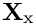, 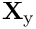, 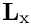 and 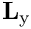 contain the  and
and  components of the unknown nodal positions and Lagrange multipliers, respectively. The overbars identify the unknown nodal positions that are constrained by the Lagrange multiplier. The matrices 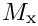 and
components of the unknown nodal positions and Lagrange multipliers, respectively. The overbars identify the unknown nodal positions that are constrained by the Lagrange multiplier. The matrices 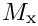 and  are mass matrices whose entries are formed from products of the basis functions, 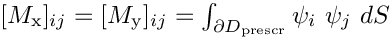.
are mass matrices whose entries are formed from products of the basis functions, 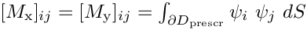.
Muddle, Mihajlovic & Heil (2012) show that
![\[ {\cal P}_{\rm PS}=\left[ \begin{array}{cccc|cc} E_{\rm xx}&E_{\rm x\bar{\rm x}}&E_{\rm xy}&E_{\rm x\bar{\rm y}}&&\\ E_{\bar{\rm x}\rm x}&E_{\bar{\rm x}\bar{\rm x}}+\sigma I&E_{\bar{\rm x}\rm y}&E_{\bar{\rm x}\bar{\rm y}}&&\\ E_{\rm yx}&E_{\rm y\bar{\rm x}}&E_{\rm yy}&E_{\rm y\bar{\rm y}}&&\\ E_{\bar{\rm y}\rm x}&E_{\bar{\rm y}\bar{\rm x}}&E_{\bar{\rm y}\rm y}&E_{\bar{\rm y}\bar{\rm y}}+\sigma I&&\\ \hline &&&&\frac{1}{\sigma}M_{\rm x}^2&\\ &&&&&\frac{1}{\sigma}M_{\rm y}^2\\ \end{array} \right] \ \ \ \ \ \ (2) \]](form_14.png)
is an optimal preconditioner for the linear system (1) if we set 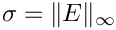 where  is the compound 4x4 top-left block
is the compound 4x4 top-left block
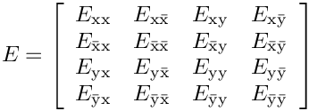
in the Jacobian matrix.
The application of the preconditioner (i.e. the solution of linear systems of the form 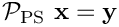 for  ) requires three linear solves: One involving the compound 4x4 top-left block in 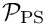,
) requires three linear solves: One involving the compound 4x4 top-left block in 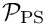,
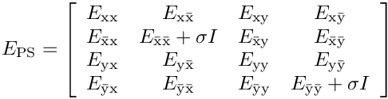
and two involving the two squared mass matrices, 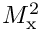 and 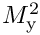.
Numerical experiments in Muddle, Mihajlovic & Heil (2012) show that an efficient implementation of the preconditioner is obtained by replacing the 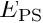 block in the preconditioner by its upper block-triangular approximation, corresponding to the preconditioner
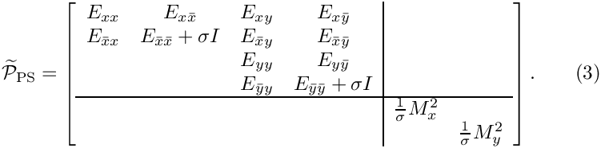
Furthermore, a fully optimal preconditioner (in which the solve times scale linearly with the number of unknowns) can be obtained by:
- approximately solving the subsidiary linear systems involving the diagonal blocks
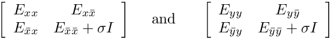
in (3) by performing a fixed number of algebraic multigrid (AMG) cycles,
and by
- approximately solving the subsidiary linear systems involving and by two consecutive linear solves involving the mass matrices themselves. Following Wathen [A. Wathen, "Realistic eigenvalue bounds for the Galerkin mass matrix", IMA Journal of Numerical Analysis 7 (1987) 449-457], Muddle, Mihajlovic & Heil (2012) suggest employing CG, preconditioned by diagonal scaling, as the solver for these systems. This solver converges so rapidly that a fixed number of four CG iterations suffices to compute the solution to sufficient accuracy so that 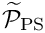 can be treated as a constant preconditioner.
With these approximations, the computational cost of one application of is linear in the number of unknowns. The optimality of the preconditioner can therefore be assessed by demonstrating that the number of GMRES iterations remains constant under mesh refinement.
Implementation and use of the preconditioner
The preconditioner described above is implemented within oomph-lib's (parallel) block preconditioning framework which is described in another tutorial. For the purpose of the implementation, we decompose the preconditioning matrix into the 2x2 main blocks indicated by the vertical and horizontal lines in (2) and (3).
The application of the preconditioner requires the classification of the unknowns into the six (in 2D) different "dof types" discussed above. This is done on an element-by-element basis (since only the elements "know" what their nodal degrees of freedom correspond to) by implementing/overloading the functions
GeneralisedElement::ndof_types(...)which returns the number of dof types classified by that element.GeneralisedElement::get_block_numbers_for_unknowns(...)which associates each degree of freedom (identified by its global equation number) with the dof type within its block.
For a 2D problem the enumeration of the dofs is chosen as follows. The SolidElements classify only the nodal positions and sub-divide them into those that are constrained and not constrained by the displacement boundary condition so that within that block
- dof type 0 corresponds to the unconstrained x-nodal coordinates,
- dof type 1 corresponds to the unconstrained y-nodal coordinates,
- dof type 2 corresponds to the constrained x-nodal coordinates,
- dof type 3 corresponds to the constrained y-nodal coordinates.
The FaceElements that apply the displacement constraint classify the Lagrange multipliers so that within that block
- dof type 0 corresponds to the x-component of the Lagrange multiplier,
- dof type 1 corresponds to the y-component of the Lagrange multiplier,
with the obvious generalisation to 3D.
Results
We examine the performance of the preconditioner in the test problem discussed in another tutorial: The upper surface of a unit square is subjected to a prescribed displacement that is imposed by Lagrange multipliers. The first of the two tables below shows the GMRES iteration counts (averaged over all linear solves performed in the course of all Newton iterations) as a function of the mesh refinement (represented by the total number of unknowns) for different implementations of the preconditioner.
- "SuperLU" corresponds to the exact implementation of the preconditioner in which the linear systems involving the matrix and the two squared mass matrices, and , are solved by SuperLU.
- "Upper triangular E" corresponds to the case in which is replaced by its upper block-triangular approximation (corresponding to 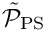) but the four linear solves (two involving the diagonal blocks of ; two involving the squared mass matrices, and ), are performed by SuperLU.
- "Upper triangular E; Hypre/CG" are the results obtained when using the same block approximation of the preconditioner, but using two AMG cycles (performed with Hypre) for the approximate solution of the diagonal blocks of , and diagonally preconditioned CG as the approximate solver for the mass matrices.
n_dof | 798 | 3198 | 12798 | 51198 | 204798 |
| SuperLU | 8.1 | 8.1 | 8.3 | 8.3 | 8.3 |
| Upper triangular E | 24.9 | 26.9 | 28.4 | 28.7 | 28.9 |
| Upper triangular E; Hypre/CG | 24.9 | 26.9 | 28.4 | 28.8 | 29.1 |
n_dof) for different implementations of the preconditioner. As expected, the GMRES iteration counts are small and mesh independent for the exact implementation of the preconditioner. Replacing the (costly) exact solves by (faster) approximate solves leads to a modest increase in the (absolute) number of GMRES iterations, while retaining their virtual mesh independence under sufficiently strong mesh refinement.
The benefit of switching to the approximate solves becomes apparent in the next table which shows the average cpu times required for the solution of the linear systems by GMRES. For sufficiently fine discretisations the larger number of GMRES iterations for the inexact solves is more than compensated for by the much lower cost of the preconditioning operations. The final implementation yields cpu times that are proportional to the number of unknowns – the hallmark of an optimal solver.
n_dof | 798 | 3198 | 12798 | 51198 | 204798 |
| SuperLU | 0.140409 | 0.720991 | 4.47518 | 35.1349 | 336.517 |
| Upper triangular E | 0.160478 | 0.737302 | 3.80428 | 22.6697 | 170.048 |
| Upper triangular E; Hypre/CG | 0.225759 | 0.895603 | 3.61778 | 15.8982 | 64.4825 |
n_dof) for different implementations of the preconditioner. Modifications to the driver code
Most of the driver code is unchanged from the implementation discussed in the
original tutorial. We therefore only discuss the modifications required to employ preconditioned GMRES as the linear solver for the Newton method.
(Re-)classification of the dof types
As discussed above (and in the more detailed block-preconditioning tutorial, the classification of the degrees of freedom into different "dof types" has to be performed by the elements. Our implementation of the pseudo-elastic preconditioner treats the solver for the linear system involving as a subsidiary preconditioner. oomph-lib's existing solid mechanics elements already provide dof classification for the nodal positions according to the coordinate directions (so for a 2D displacement-based solid element the call to ndof_types() will return 2 – the x and y nodal positions). If these elements are to be used with our preconditioner, this classification must be over-written to distinguish between constrained and unconstrained nodal positions. This is done most easily by providing a wrapper class (templated by the type of the underlying solid element) in the driver code to re-implement (overload) the relevant functions:
The member function ndof_types() returns the number of dof types associated with (and classified by) this element: twice the number of spatial dimensions (for the constrained and unconstrained nodal positions).
The member function get_dof_numbers_for_unknowns() returns a list of pairs, associating each (global) unknown (stored as the first entry in the pair) with the dof type within its block (stored as the second entry in the pair). We distinguish between constrained and unconstrained nodes by checking if the node has been resized to accommodate storage for the Lagrange multipliers. [Recall that FiniteElement::required_nvalue(j) returns the number of nodal values at local node j, required by the element itself (recall that for "pure" solid mechanics elements this number is zero because the nodal coordinates are stored as a separate Data item); Node::nvalue() returns the number of values actually stored at a Node – if this exceeds the value returned by FiniteElement::required_nvalue(j), node j must have been resized when the FaceElement applying the displacement constraint by Lagrange multipliers was attached.]
The ImposeDisplacementByLagrangeMultiplierElements which we use to impose the displacement constraint already label the x- and y- [and, in 3D, z-]component of the Lagrange multipliers as dof types 0, 1 [and 2], as required by our preconditioner. Therefore no modification is required.
Modifications to the main code
The main code only requires minor changes, all associated with the specification of different solver options. Since we provide the option to use Hypre and Trilinos solvers, we need to activate MPI if oomph-lib has been compiled with MPI support (even if the code is run in serial):
Next we define and process the possible command line flags which are used to select solver options and to specify the spatial resolution (in terms of of the number of elements in the x- and y-directions. The –no_adapt flag suppresses the spatial adaptivity to facilitate systematic mesh refinement studies.
We then assign the command line flags that were specified and document the ones that were recognised before building the problem, specifying the "wrapped" version of the RefineableQPVDElement as the template parameter.
The rest of the main code is identical to the original version discussed in another tutorial and is therefore omitted here.
Modifications to the problem constructor
The majority of the problem constructor is unchanged from the original version of the code. Having created the bulk mesh (and stored a pointer to it in the private member Solid_mesh_pt) and the mesh of Lagrange multiplier elements (with a pointer stored in Lagrange_multiplier_mesh_pt), we specify a GMRES as the linear solver (using Trilinos' version of it, if available):
Next, we create an instance of our preconditioner, specify the meshes that contain the "bulk" solid and Lagrange multiplier elements, respectively, and pass the preconditioner to the iterative linear solver.
By default the preconditioner performs the preconditioning operations as described above, and performs the block solves in (2) exactly, using SuperLU.
The use of different blocked approximations to is controlled via the elastic_preconditioner_type() function. It is possible to specify the block approximation in terms of the (self-explanatory) enumeration
PseudoElasticPreconditioner::Exact_block_preconditioner[the default]PseudoElasticPreconditioner::Block_diagonal_preconditionerPseudoElasticPreconditioner::Block_upper_triangular_preconditionerPseudoElasticPreconditioner::Block_lower_triangular_preconditioner
So, to choose an upper block-triangular approximation for we write
By default the linear systems involving the diagonal blocks of are performed by SuperLU. The function set_elastic_subsidiary_preconditioner(...) allows the specification of another (approximate) solver (or subsidiary preconditioner, in the terminology of oomph-lib's block preconditioning framework). The argument to this function is a pointer to a global function that returns an instance of the required solver. A function that creates an instantiation of Hypre's AMG solver (with suitable settings) is already implemented in the Pseudo_Elastic_Preconditioner_Subsidiary_Operator_Helper helper namespace and can be activated as follows:
(Recall that subsidiary preconditioners are deleted automatically by the master preconditioner when they are no longer required.)
A similar construction is used to specify alternative (approximate) solvers for the linear systems involving the mass matrices. To perform the solves with Trilinos' CG solver (and diagonal scaling) we state:
That's it!
Comments and Exercises
Comments
- The machinery described here may seem rather heavy for a rather obscure problem. As mentioned at the beginning of this tutorial, the main purpose of this preconditioner is to act as a building block for our preconditioner for large-displacement FSI problems in which the ALE node update of the fluid mesh in response to the deformation of the fluid-loaded solid is handled by (pseudo-)elasticity. We refer to another tutorial for details.
- Further details of the theory, such as the proof of the optimality of the preconditioner, can be found in
Muddle, Mihajlovic & Heil (2012).
Exercises
- Experiment with alternative subsidiary preconditioners (inexact solvers) for the solution of the 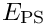 block. For instance, set the argument to
PseudoElasticPreconditioner::elastic_preconditioner_type()toPseudoElasticPreconditioner::Block_diagonal_preconditioner. With this setting, the solution of the linear systems involving is performed using the block-diagonal approximation of . This saves one matrix-vector product with the off-diagonal blocks per iteration but
significantly increases the GMRES iteration counts. [Don't take our word for it – try it!]
- Specify "your own" subsidiary preconditioner (inexact solver) by writing a global function (well, you should obviously hide it in a namespace – remember that global data and functions are evil!) that creates an instance of that preconditioner. Pass a function pointer to this function to
PseudoElasticPreconditioner::set_elastic_subsidiary_preconditioner(). [Hint: The driver code already contains the relevant source lines (omitted in the code listings above) to illustrate how to solve the linear systems with a diagonal preconditioner. This leads to a fairly catastrophic deterioration of the GMRES iteration counts – the point of the exercise is to demonstrate how to implement such alternative (and hopefully better!) subsidiary preconditioners "from scratch".]
- Inspect (and experiment with) our settings for Hypre's AMG solver – defined in the
Pseudo_Elastic_Preconditioner_Subsidiary_Operator_Helpernamespace in
src/multi_physics/pseudo_elastic_preconditioner.h
and
src/multi_physics/pseudo_elastic_preconditioner.cc
Source files for this tutorial
- The source files for this tutorial are located in the directory:
demo_drivers/solid/prescribed_displ_lagr_mult
- The driver code is:
demo_drivers/solid/prescribed_displ_lagr_mult/prescribed_displ_lagr_mult_precond.cc
PDF file
A pdf version of this document is available.